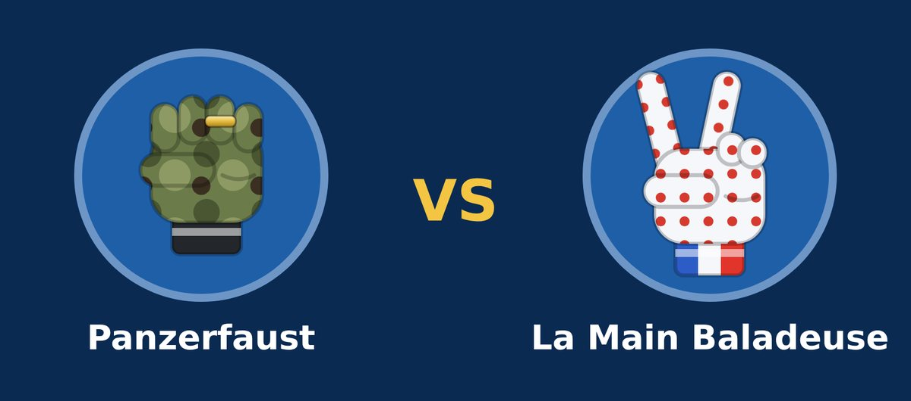
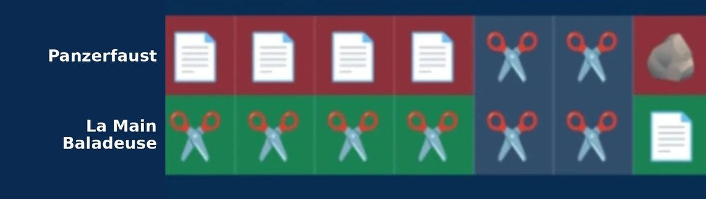
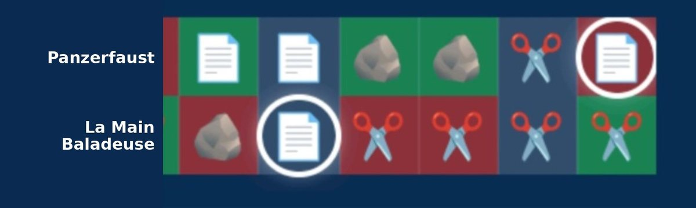
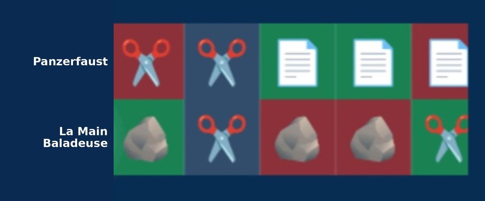
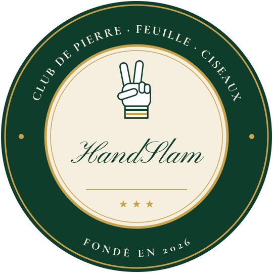

Chroniques du court central
Entretien croisé : Panzerfaust – La Main Baladeuse
Master d'Ankara

En marge du Master d'Ankara, nous avons pu rencontrer Panzerfaust et La Main Baladeuse pour un long entretien. Les deux mains ont accepté de revenir sur leur dernière rencontre et de se livrer sur leur approche du jeu, dans une discussion à bâtons rompus.
Propos recueillis par la rédaction · 25 novembre 2026 · 6 minutes de lecture
La Main Baladeuse, vous venez de remporter un match très serré, qui s'est conclu par une victoire en trois sets (11-9, 5-11, 12-10). Quelles sont vos réactions à chaud ?
La Main Baladeuse : Soulagé, satisfait… et surtout vidé. Ce fut une rencontre éprouvante, où je n'ai jamais vraiment eu le sentiment de maîtriser les débats. Le score le dit mieux que moi : tout s'est joué sur un fil, et ce fil a failli céder plusieurs fois.
Mon bon départ dans le premier set a compté : il m'a donné confiance et m'a permis de m'installer dans la rencontre. Ensuite, ce sont quelques points clés, négociés au bon moment, qui ont fait la différence. Dans un match aussi serré, il ne s'agit pas de dominer son adversaire, mais d'être là quand ça compte. Le reste du temps, on survit.
Et vous, Panzerfaust, à quel moment avez-vous senti que la rencontre vous échappait ?
Panzerfaust : J'y ai cru jusqu'au bout. J'ai laissé filer la première manche, après un départ calamiteux. On connaît les qualités chifoumistiques de La Main Baladeuse, qui a su rester bien en place à l'entame du match. Malgré tout, j'ai pu revenir dans le deuxième set, en adaptant un peu mon approche. Il s'est ensuite imposé au troisième set. J'ai commis quelques erreurs de lecture, qui m'ont coûté cher. À ce niveau-là, la moindre hésitation ne pardonne pas.
Revenons en images sur quelques moments clés du match, à commencer par l'ouverture du premier set

Pourquoi le choix de la feuille ?
Panzerfaust : La Main Baladeuse restait sur plusieurs ouvertures aux ciseaux, avec enchaînement de Kolodrov. J'étais un peu réticent à l'idée d'ouvrir avec ciseaux, fragilisé par les séquelles d'une précédente rencontre (NDLR : lors de l'Open de Charleroi, les ciseaux du Panzerfaust ont été sérieusement touchés après deux smashs successifs). L'ouverture à pierre étant plutôt à vocation défensive, j'ai opté pour la feuille.
Malheureusement, mon adversaire avait lui aussi choisi une ouverture longue, sur son signe de prédilection, les ciseaux. Je ne l'ai compris qu'à la troisième main, mais j'ai senti que La Main Baladeuse avait saisi lui aussi que j'avais percé à jour son approche en ter. C'était alors à quitte ou double : l'analyse, confortée par l'orgueil, m'a conduit à proposer feuille en 4, mais l'ouverture en ter de mon adversaire est devenue fleuve. Avec 0-4 à l'affichage, il m'a fallu stopper l'hémorragie, en misant sur le signe opposé, pour ne pas m'exposer à un retour à l'envoyeur. J'ai su enrayer la spirale négative, mais mon dégagement, au coup 7, était un peu hasardeux et La Main Baladeuse a pris une sérieuse option sur le premier set. Je suis revenu progressivement dans le match, mais j'avais laissé beaucoup d'influx dans cette séquence initiale.
La Main Baladeuse : Face à un adversaire du calibre de Panzerfaust, une ouverture ne s'improvise pas : elle se prépare bien en amont. J'avais beaucoup joué les ciseaux lors de mes dernières rencontres. J'ai donc ouvert… aux ciseaux. Cela peut sembler paradoxal, mais je misais justement sur le fait qu'il attendrait un changement de ma part. Au chifoumi, la ruse la plus efficace consiste parfois à ne pas en avoir.
L'ouverture ter, puis fleuve, s'est décidée après les deuxième et troisième points. C'était davantage un choix d'opportunité, dicté par la lecture naissante de la rencontre, qu'une stratégie minutieusement préparée. Disons que j'ai eu la sagesse de ne pas changer ce qui marchait.
Revenons sur la fin de ce premier set. Panzerfaust, on a cru que vous parviendriez à renverser la vapeur, mais La Main Baladeuse a su conclure.

Panzerfaust : Je restais sur un bon rythme, qui m'a permis de recoller au score. La feuille et la pierre m'avaient permis d'obtenir un bon rendement dans la seconde partie du set et de neutraliser un smash mal inspiré. Après une nouvelle égalité à ciseaux, je ne pensais pas que La Main Baladeuse reviendrait sur son signe fort. Je suis donc monté au filet pour un smash, mais il est resté sur ses appuis pour conclure.
La Main Baladeuse : Même après ce départ idéal, je ne me suis jamais senti libéré. Panzerfaust m'a mis sous pression avec sa séquence pierre-feuille, qui a brouillé mes repères et compliqué toute anticipation. Je l'avoue : son retour au score m'a rendu nerveux.
Sur le dernier point, il est passé à l'offensive, très agressif avec sa feuille. J'ai su garder mon sang-froid, et mes ciseaux ont fait le reste. Avoir su résister à cette remontée et emporter le premier set, c'est un vrai motif de satisfaction.
On termine par la dernière séquence et la balle de match. Quelles leçons tirez-vous de cet épisode ?

Panzerfaust : J'ai concédé trop de points pour espérer remporter le set. Je n'ai pas su mettre la feuille quand il aurait fallu et je me suis fait distancer. Ensuite, la feuille m'a permis malgré tout de rester au contact. Après ces deux points, j'ai été un peu naïf : j'ai décidé de ne pas opter pour un dégagement, misant sur l'entêtement de mon adversaire. Mais il a su réagir et conclure ce match, en maintenant la pression sur deux signes.
La Main Baladeuse : Avant cette balle de match, Panzerfaust avait déroulé l'une de ces séquences sur deux signes dont il a le secret : les ciseaux, puis la feuille, à deux reprises. Je ne le voyais pas s'orienter vers le signe opposé : j'ai très vite écarté cette hypothèse.
Le choix des ciseaux est donc apparu assez naturellement. Ils me permettaient, a minima, de neutraliser un retour aux ciseaux de sa part, tout en me donnant la possibilité de le sanctionner s'il persistait sur la feuille. Une lecture qui s'est révélée payante, puisque c'est précisément le scénario qui m'a permis de conclure la rencontre.
Comment voyez-vous le prochain match ?
Panzerfaust : La vérité d'un match n'est pas celle du suivant. Il faut savoir se remettre en cause et adapter ses séquences, sans céder à la panique. Au-delà du travail tactique sur les statistiques avancées, l'essentiel est d'abord de rester focalisé sur sa partition et ses propres réactions, pour gommer les tics et les habitudes de jeu que l'adversaire ne manquera pas d'exploiter.
La Main Baladeuse : Je vais d'abord savourer cette victoire, quelques heures au moins. Mais il faudra vite se remobiliser et penser à notre prochain rendez-vous. Dans cette discipline, se reposer sur ses acquis est probablement l'une des meilleures façons de préparer sa défaite.
Je vais donc décortiquer ses séquences et ses habitudes, comme toujours. Mais une préparation n'est qu'un point de départ : une fois sur le court, il faut savoir s'en tenir à son plan… ou le jeter à la poubelle au troisième coup. Rien n'est plus dangereux qu'une stratégie figée face à une main qui, elle, s'adapte.
Comme le disait mon mentor, J. Vankersschaver :
« Au chifoumi, chaque match écrit sa propre histoire. Elle n'est ni le prolongement de la précédente, ni l'annonce de la suivante. Le véritable talent consiste à savoir lire l'instant. »
C'est une philosophie que je m'efforce de garder à l'esprit.
